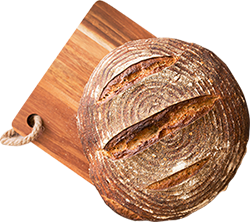

As delícias de padaria que você adora no Black Goose Bistro... agora também para levar!
Saindo do forno
Pães

Nossos pães são feitos diariamente com farinha integral da mais alta qualidade, água, sal e fermento biológico ou natural. Simples e naturais, e nunca levam conservantes. A paciência é a chave para alcançar o ponto certo de fermentação e assar cada pão à perfeição. Disponíveis nas versões integral, fermentação natural, de azeitona, centeio clássico e batata com cebola.
Todos os dias oferecemos uma grande variedade de muffins, incluindo mirtilo, frutas vermelhas, farelo de trigo, milho, limão com papoula e chocolate. Nossos muffins são feitos do zero todos os dias. Venha conhecer nossos sabores da estação!
A Black Goose Bakery nasceu para levar os sabores artesanais do Black Goose Bistro para o seu dia a dia. Preparamos fornadas frescas todas as manhãs com ingredientes selecionados e receitas tradicionais.
Como fazemos nossos pães
Nossos pães passam por fermentação controlada para desenvolver sabor e textura. Depois de sovados e modelados, são assados em alta temperatura para garantir casca crocante e miolo macio.
Como fazemos nossos muffins
Os muffins são preparados diariamente com massa fresca e combinações da estação. Assim, cada fornada mantém aroma, maciez e sabor em todos os pedaços.